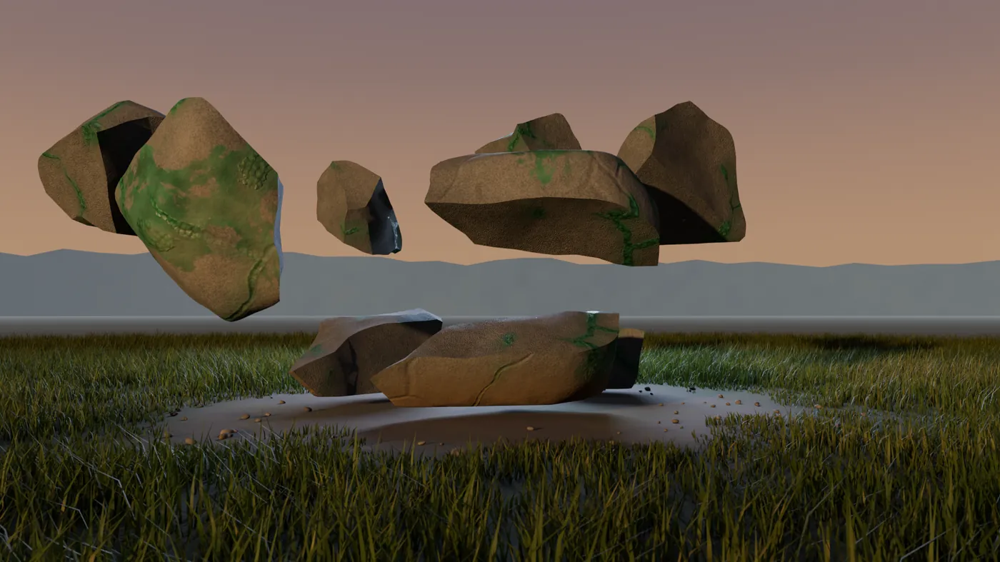
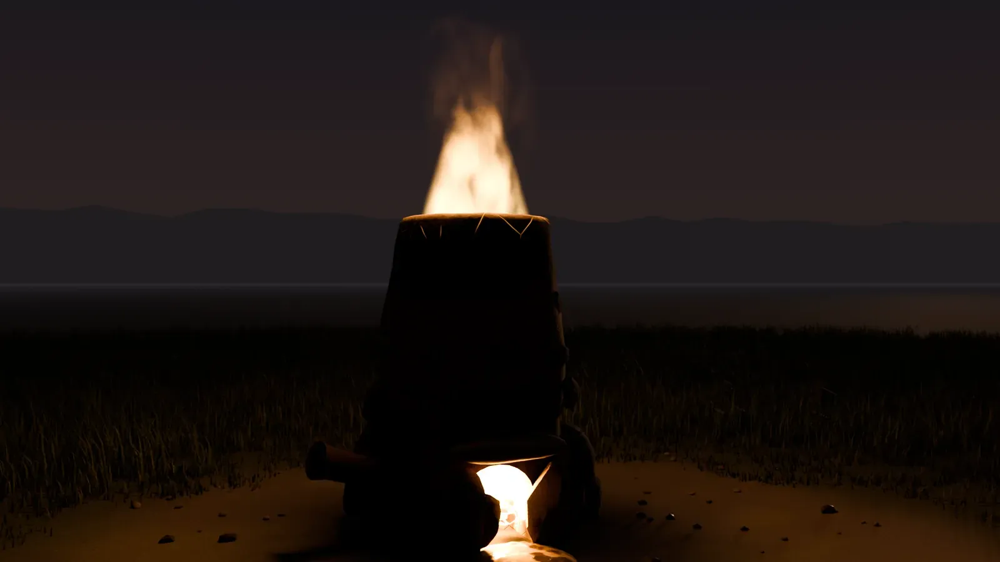

How ASHWRIGHT works, from the first ore chunk to the master's mark. Eight chapters, in the order you meet them in the game.
Chapter 01
The island
Antoria after the collapse. The island is deserted: the harbour lies abandoned, the infected stand on the coast road, and at night it gets properly dark. You start on the coast with an emergency bag, a stone pickaxe and a campfire.
A civil defence leaflet is tucked into your jacket. It begins with the sentence: "In an emergency, the island provides for itself." You take that to heart. Everything you need you make yourself, from tools to clothing and weapons to a house.
End times outside, parlour inside. The more dangerous the night, the more a house with shutters and a fireplace counts. The chapter on building shows what that looks like.
Chapter 02
Ore & deposits
No ore spawns at random. Every deposit sits where the geology puts it, calculated from the real map data: rock, terrain, water and slope. If you know what to look for, you'll find more.
Ore comes in groups and grows back in real time. Mine a group bare and it moves elsewhere. Mined ore decays over time, so hoarding doesn't pay.

A chunk breaks under the pickaxe. Render from the mod's models.
You can tell what's in front of you by the stone: copper is tarnished green, iron ore has rust-red bands. Some deposits you see from the path, others you only find if you search.
The pickaxe decides. The stone pickaxe only gets you into soft rock. If it's too soft for the ore, it bounces off. Harder ore needs a better pickaxe.
Chapter 03
Furnace & smelting
Ore in, charcoal on top, and bring it up to temperature with the bellows. The ore only melts once the furnace is hot enough. You burn the charcoal yourself in a kiln first. The clay furnace is one you build yourself.

The furnace of clay and stone.
Copper and tin become bronze, and bronze tools get you to the iron. Iron needs more heat than bronze. After that it goes on, and you'll find out in the game which tiers come next.
You find recipes. A recipe shows up in the menu as soon as you've picked up a matching ingredient. At the start you only know a handful.
Chapter 04
Quality
Every vein has one of five quality grades. It ends up in the ingot and in the tool. You'll notice the rare ones right away.
Impurecommon
Solid
Pure
High-purity
Flawlessrare
How good a tool turns out depends on the ore and on the experience of whoever makes it. Nothing is rolled by dice. Your level never locks a recipe: with little experience the goods come out worse, but you can still make them.
As a master you write master's writings, and your goods carry your mark.
Chapter 05
Professions
There are 14 professions in four groups. Every job earns experience in its profession. Higher levels make you faster and raise the quality you can reach. You can learn everything, but mastering everything takes a lot of time.
from level 0
Apprentice
You can make everything, only in basic quality.
from level 100
Journeyman
From here you reach any quality a recipe asks for.
from level 200
Master
Flawless pieces and master's writings.
Raw materials
Mining
Mine ore, with a bigger yield per level.
Prospecting
Find deposits and judge them.
Forestry & Resin
Fell trees, split wood, collect resin.
Hunting & Tanning
Pelts, leather, sinew and meat.
Refining
Smelting
Smelt ore into ingots in the furnace.
Ceramics & Glass
Crucibles, casting moulds, bricks.
Lab
Sulphur, saltpetre and other base materials.
Farming
Lay out beds, harvest, stock up.
Minter
Strikes the coins that are used for trade.
Making
Smithing
Tools at the anvil, as a minigame.
Gunsmith
Weapons from individual parts.
Mechanics
Engines and vehicles.
Building
Huts, houses, walls.
Outdoors
Survival
Make fire, improvised tools, the first days.
On top of that come skills that improve through practice: fitness, stealth, ranged combat, melee and first aid.
Chapter 06
Trade
Everything that exists was made by a player. That is why everyone needs someone else sooner or later: whoever is good at a profession trades with the others. The first days run on barter, and money comes later.
The minters strike the coins that are used for trade. If you would rather play alone, you play every chain yourself, and trading just saves you time.
Chapter 07
Building
Building is a profession of its own: huts, houses and walls from wood, clay and stone. You start with the furnace you build yourself. Shutters, a fireplace and a ladder or hatch turn a bare frame into a parlour, and furnishing it gives you comfort.
Everything you build is made from material that a player mined, smelted or sawed. Outside it is the end of the world, inside it should feel like home.
Work in progress. Base building is not finished yet. I regularly show what we are working on as a sneak peek in Discord.
Chapter 08
Noise & PvP
Work is loud. Mining, forging and building can be heard from far away, by the infected too, and by other players. Between rock walls every strike carries further.
PvP comes with proximity chat. Outside the monuments the rule is: talk first, then shoot. Inside the monuments people shoot without warning. Anyone who repeatedly kills without talking first is removed from the server. The seven rules are in Discord.